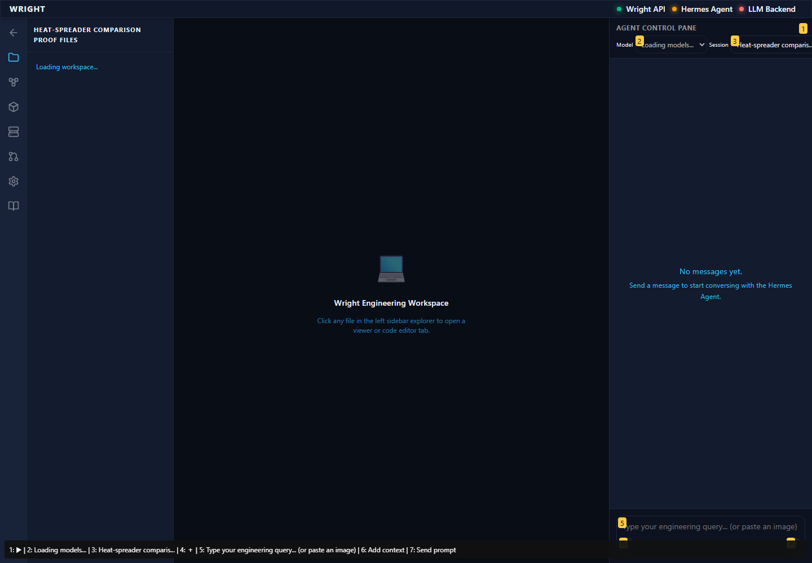
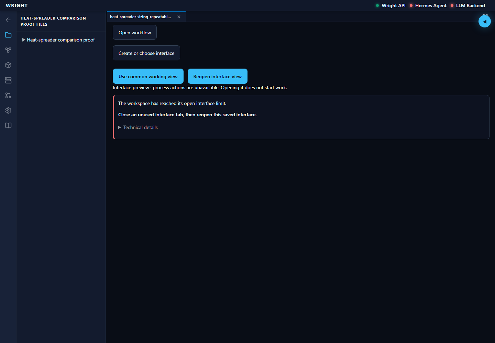
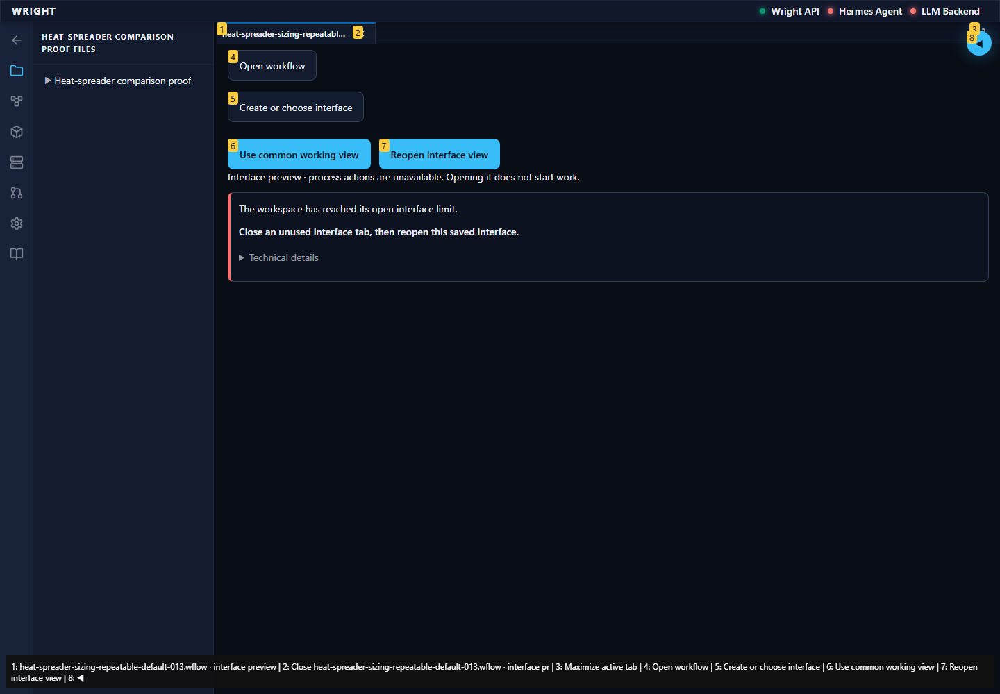

Current installed workspace entry · pass
The normal workspace opens on the same current installed package.
Expected: Normal workspace available.
Actual: Workflows is visible on the current installed host.
raw
annotated 
Normal Wright workspace and actual isolated engineering run. No mocked routes or physical action.
Status: blocked
The normal workspace opens on the same current installed package.
Expected: Normal workspace available.
Actual: Workflows is visible on the current installed host.
raw
annotated 
The normal workspace entry did not meet the expected state.
Expected: Workspace and established editor available.
Actual: expect(locator).toBeVisible() failed Locator: locator('[data-testid="surface-panel-host"]:visible').locator('iframe').contentFrame().getByText('Preview - process controls are read-only.', { exact: true }) Expected: visible Timeout: 90000ms Error: element(s) not found Call log: - Expect "to.be.visible" with timeout 90000ms - waiting for locator('[data-testid="surface-panel-host"]:visible').locator('iframe').contentFrame().getByText('Preview - process controls are read-only.', { exact: true })
raw 
annotated 